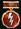

Правила клана
1. Общие положения
1.1. Данный клан был создан для выполнения Клановых Боевых Задач, участие в турнирных боях, помощь соклановцам в боевых задач.
1.2. В нашем клане существует дискорд канал, подключиться к нему обязательно. Ссылку можете найти вверху шапки сайта нажав на кнопку со значком Discord.
1.3. Помогайте своим соклановцем выполнять взводные боевые задачачи
1.4. Выполняйте Клановые Боевые Задачи чтобы суммарно каждую неделю было 30 
1.5. Когда подключаетесь к нашему Discord каналу у вас должен быть указан в дискорде ваш игровой ник. Если не хотите менять свой личный ник в dicord, то отпишите главе клана или замам чтобы отредоктировали в нашем канале
1.6. Всем участникам клана запрещено выносить на общественное обсуждение внутри клановую информацию, в том числе и внутренние проблемы клана.
2. В клане запрещается
2.1. Общаться в клановом чате ненормативной лекскикой
2.2. Общаться оскроблительно с соклановцем
2.3. Учавствовать в турнирах без связи в Discord
2.4. Принимать приглашения в турнирные бои без личной явки
2.5. Спамить/флудить в клановом чате
3. Турниры
3.1. Если вы прнимаете приглашение в команту турнира, вы обязаны на него явится.
3.2. В случае, когда приняли приглашение в комнату турнира и по какой-то причине не можете явится в турнире отпишитесь командиру комнаты до его начала.
3.3. Если будет систематическое не явка в турни, касается тех кто учавствуют, приведет к исключению из клана
4. Участие в турнире
4.1. Во время боя главным является полевой командир, все бойцы выполняют команды полевика.
4.2. Во время боя полевик всегда прав, единоначалие всегда лучше анархии.
4.3. На ошибки полевому командиру может указать любой боец, после боя в адекватной форме, четко аргументируя свои выводы.
4.4. В бою Игрок клана обязан соблюдать тишину в эфире (допускаются краткие доклады о принятии/выполнении команды, либо ответы по запросу командира).
4.5. Полевик во время турнира исполняет главенствующую роль. Любые несогласия с тактичностью и командованием могут выноситься на обсуждение но только после турнира.
4.6. При перечислении нужной техники, те игроки у которых есть эта техника должны сразу ее выбрать, при отсутствии профессиональных навыков игры на выбранной машине игрок может предупредить об этом полевика, но не игнорировать приказы полевика по типу я не хочу брать этот танк и прочее.
4.7. Во время турнира полевик определяет проведение и цели которые собирается достичь команда, игроки не должны разговаривать на темы которые не касаются турнирного боя, так как это может помешать полевику исполнению своих обязанностей.
4.8. При раскатке на позиционную игру каждый игрок должен сам рассмотреть лучшую для себя позицию в конкретном месте обозначенную полевиком, приказ полевика должен быть исполнен, но каждый игрок должен думать что он делает, так как полевик не может наблюдать за каждым бойцом.
4.9. Если полевик желает провести турнир в неформальной обстановке развлекательной, он предупреждает об этом игроков и турнирные бои проходят соответственно в форме свободного общения без каких либо жёстко поставленных целей на победу.
4.10. Полевик имеет право выключать микрофон игрока если тот в свою очередь мешает командованию, а так же ставить данного игрока на неоднократную замену за неспортивное поведение в бою.
4.11. Рекомендации игрокам. При вкатывании в противника первые танки получившие много урона должны прятаться за союзников либо укрытия, желательно перемещаться клином без остановки, сбивать гусеницы с уроном и знать крит места танков для поджегов либо подрыва боеукладок.
4.12. Полевик обязан выносить поощрения в устной форме:
4.12.1. А также обязанность полевика, следить за моральной составляющей команды и соответственно делать устные замечания.
4.12.2. Боец обязан уведомить о плохом самочувствии, либо о наличии состояний, связанных с возможным приемом лекарственных препаратов или алкоголя.
4.12.3. Решение о допуске такого бойца в бой остается за Полевым командиром.
Заключение
Данные правила были придуманы не просто так. Очень хорошо и важно относиться к каждому с уважением, любить и обожать никто не кого не просит и не требует. Если даже возникают какие-то разногласия и все равно на эти правила, пожалуйста, решите свои вопросы не в клановом чате, а в Личных Сообщениях.